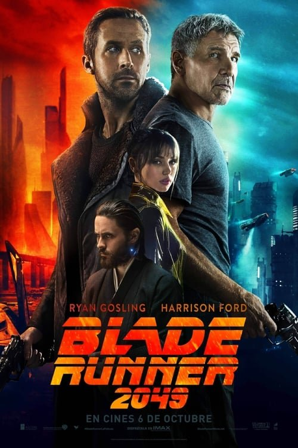

Blade Runner 2049 (2017)

Plataforma: Disney+
Puntuación IMDb: 8.0/10
Duración: 2h 44m
Género: Neo-Noir, Cyberpunk
Sinopsis Rápida
Treinta años después del original, un nuevo Blade Runner desentierra un secreto que podría desatar el caos en una sociedad ya fracturada. ¿Qué ocurre cuando la línea entre humano y replicante se borra por completo?
Sinopsis Detallada
Blade Runner 2049 sigue a K, un nuevo Blade Runner que descubre un secreto enterrado que podría desestabilizar los cimientos de la sociedad. Su investigación lo lleva a una peligrosa persecución, obligándolo a confrontar su propia identidad y la naturaleza de la humanidad. La película explora temas de memoria, identidad, y la búsqueda de significado en un mundo distópico, ofreciendo una experiencia visualmente impactante y filosóficamente profunda.
¿Por qué tenés que verla?
- Una obra maestra visual con una atmósfera inmersiva.
- La banda sonora de Hans Zimmer es sublime y evocadora.
- Elevó el debate sobre la inteligencia artificial y la condición humana.
- Secuela digna del original, expandiendo el universo de Blade Runner.
Idea Extra
Comparación escena a escena con Blade Runner (1982).
{{CONTENIDO_RELACIONADO}}